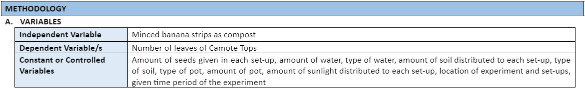
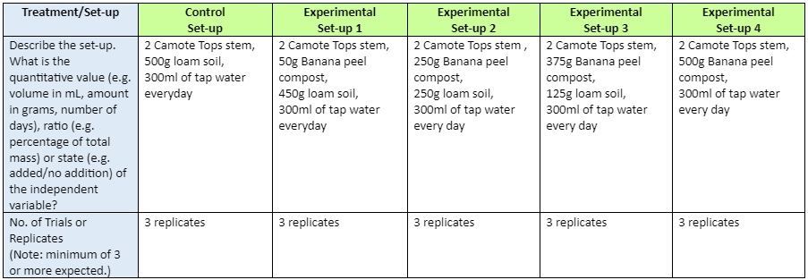
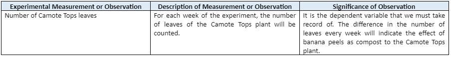
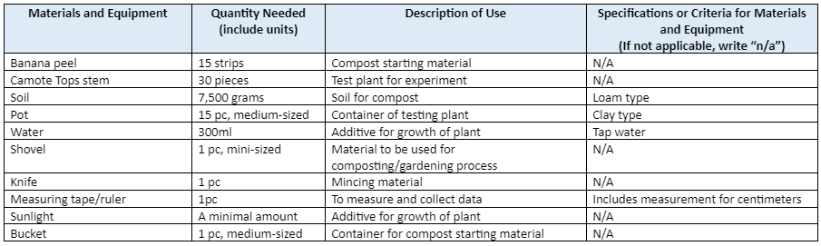
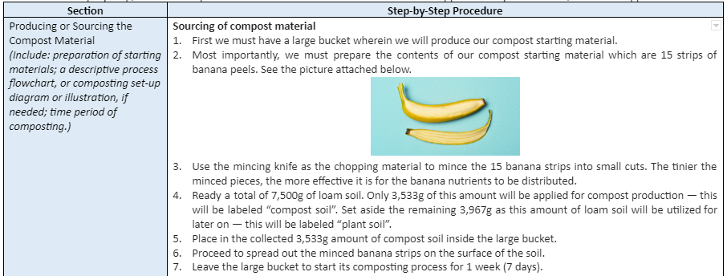
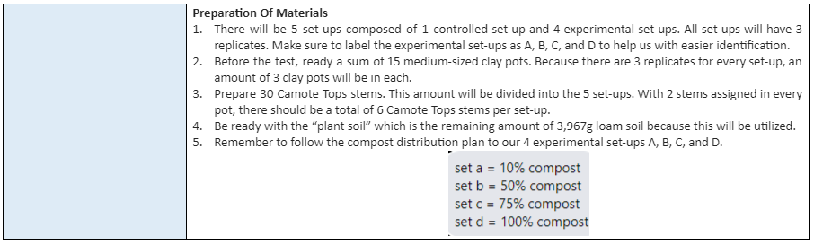
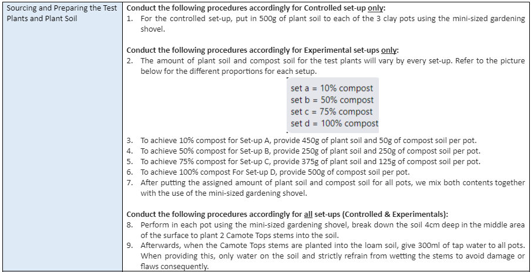
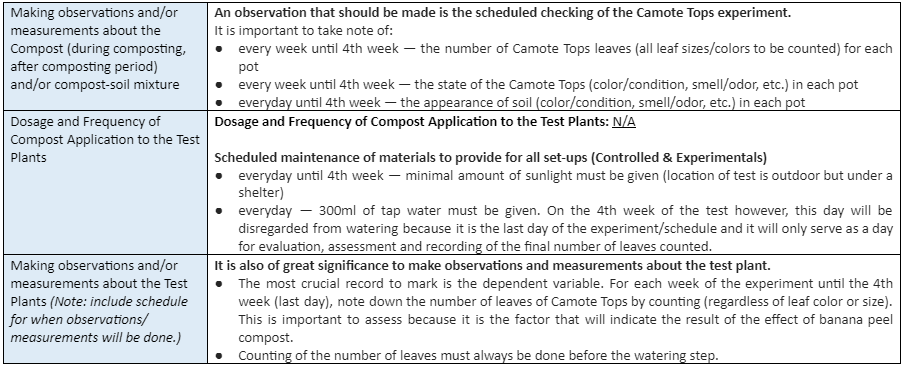

To fully understand what is compost
More about Kamote Tops
Needed Nutrients that are provided by the compost
Application and benefits of the compost

SCIENCE INVESTIGATORY PROJECT
"Banana Peels and Camote Tops Leaves"
I. Background and Significance of the Study
Our study of banana peel compost and its effects on the number of leaves of Camote Tops is vital for the community and the environment.
The value of composting is essential in various numbers of ways, one of which is that this method, if practiced and implemented, will help reduce the amount of wasted food that we regularly discard in our daily lives. The act of composting is safe and healthy for the environment because it nurtures plant growth and can also prevent environmental issues. Through our study, we will be able to grasp an understanding of the importance of composting, the effects of this, and the significant impact it will cause within communities and the environment. This research will educate and encourage community members and other individuals to apply these as sustainable procedures in their lifestyle routine, livelihood, surroundings, and even at home.
The specific community and institution that our PT group is engaged with — SAKADAB — can benefit from composting in general through utilizing compost as a fertilizer in order to promote healthy growth in the plants and crops that surrounds the location of SAKADAB, and to lessen any leftover of food waste. If the environment is inhabited by flora of good condition, the oxygen being generated in the area is also clean and freshening for the lungs when inhaled, thus preventing sickness that an individual can catch. In addition, our SIP composting project can benefit the individuals of SAKADAB through presenting a method of composting Camote Tops, resulting in easy access to resources such as nutrition and sustenance for the community because it is naturally produced with the help of composting, and provided to the members of the SAKADAB community.
II. Statement of the Problem
How will banana peels as compost affect the number of leaves that Camote Tops will have in a 1-month period?
III. Hypothesis
If we use banana peel as compost, then the number of Camote Tops leaves will increase.
IV. Review Of Related Literature
Compost in general is a mixture of organic plant matter that decomposes, which is used to improve the health and growth of plants and crops. This practice involves the use of food waste or scraps, leaves, and other organic matter being processed by the bacteria and organisms that decompose these. As a result, it becomes decomposed organic matter that contains nutrients and minerals that a plant can absorb. Because of these existing chemicals and biomolecules, compost can not only be used as a fertilizer to supply benefits for a plant’s growth and production, but also provide advantages for environment as well. One of the many number of positive effects that composts bring are reduction of the amount of waste being thrown in our environment; this is because, as stated earlier, compost is generally made out of food waste that we usually discard away — which can be utilized as an improvement for the condition of soil because of the compost’s nutrients that also serve as a more environmentally friendly fertilizer in opposition to chemical fertilizers.
The plant that our SIP will be focusing on is Camote Tops.
It is a plant rich in potassium, vitamin c also known as ascorbic acid, pyridoxine (vitamin B6), pantothenic acid (vitamin B5), magnesium, phosphorus, zinc, iron, and riboflavin which all are beneficial for a person's health. For Camote tops, a decent balance of fertilizer or compost that contain essential nutrients for the condition of the plant such as phosphorus, potassium, and other chemicals will result in adequate health condition and thriving growth. Without the importance of these, the survival of the plant will be limited, restricted, and will not be able to reach its optimal level of growth that will supply us with a high amount of harvest. To add, Camote Tops need chemicals from different classes of biomolecules to encourage tillering, development of all plant parts, boost root growth, and imrpove water usage effectiveness. Pectins are vital forms of carbohydrates for Camote Tops as it functions for hydration and plant cell tissues. Furthermore, cellulose is an organic compound and is well-known as a major component in the plant cell wall by maintaining the strength and stability of the structure by defining cells and building tissues. Dietary fiber, on the other hand, is another type of carbohydrate found in the cell walls of a plant that is produced through photosynthesis in order to support the metabolism of the plant.
To deliver the needed nutrients to Camote Tops, an effective compost for the health, condition, and growth can be banana peels. These fruit scraps are rich in potassium and phosphorus — both of which are the nutrients that Camote Tops essentially need for improved survival and development.
For the composting process, instead of simply laying a banana peel on the soil, another alternative method is to mince 15 banana strips and then proceed to mix these contents altogether with loam soil. With this kind of strategy of applying compost to Camote Tops, it can be certain that the biomolecules contained in the minced banana peel will be determinedly distributed to the soil of the test plant. Some other benefits that the compost can provide to the plant other than chemicals is that there will be better soil structure because with the addition of compost, the soil will allow more air to be circulated and overall, will promote healthier soil structure.
Direct or trench composting are the best methods for effectively applying compost to plants so that these plants can benefit from the nutrients, chemicals, biomolecules, and other advantages it carries. It is a composting technique that creates nutrient-rich soil that keeps moisture and lessens the need for chemical fertilizers. It promotes the growth of helpful bacteria and fungi that decompose organic material to produce humus. It feeds and nourishes already-existing plants. This kind of composting process will help the plant produce naturally.
V. Methodology
Variables
Treatments / Set-up
Experimental data to be measured or observed
Materials and equipment needed
Procedures for testing and gathering/obtaining data



Rae Margaret Lee she/her
Founder of 3CUP
Ms. Lee is one of the 5 founders of The 3Cs & UP.
Currently studying in Ateneo de Davao University Junior High School,
Ms. Lee s created this "Science Investigatory Project" webpage using HTML and CSS.
She is a member and speaker of Team 2A in his Grade 9 class, Section St. Peter Canisius, School Year 2022 - 2023.